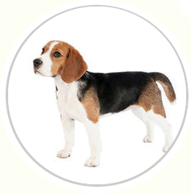

|
Rottweiler Beagle Poodle German Sheperd |
 | |
Beagle |
||
|
Weight: |
10-11 kg |
|
|
Coat |
Short haired, hard coat of medium length |
|
|
Color |
Many colors |
|
|
The beagle is a breed of small hound Mat is similar in appearance to the much larger foxhound. The beagle is a scent hound, developed primarily for hunting hare (beagling). With a great sense of well and superior tracking instinct, the beagle is employed as detection dog for prohibited agricultural imports and foodstuffs in quarantine around the world. The beagle is intelligent but single-minded. It is a popular pet due to its size, good temper, and lack of inherited health problems. |
||